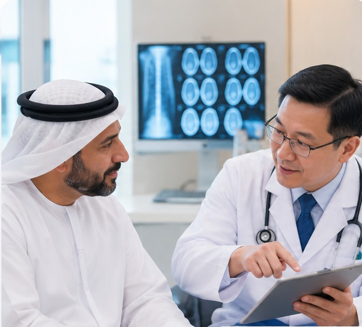

Make the journey easier.
To help international patients access medical consultations in China through organised travel assistance, responsive communication and practical coordination tailored to their needs.
Since 2006, connecting people with possibilities through experienced travel support and personal medical journey coordination in China.
TAREEK AL BAHAR TOURS LLC brings 20 years of experience in travel and international patient support, with a journey that began in 2006. We help individuals and families navigate the practical steps of seeking medical care in China with clarity, consideration and personal attention.
Connecting the UAE with China, we bring travel planning and medical coordination together. From organising documents and appointments to arranging interpretation and local travel, our role is to make an unfamiliar journey easier to manage so patients and their loved ones can focus on what matters most.

Experience has taught us that every journey is personal. We take time to understand your requirements, explain the arrangements and help you move forward with a clear plan.

Since 2006, our work has centred on helping people travel with greater confidence. Today, we combine that experience with a focused approach to international medical travel, helping bridge the distance between patients, families and medical providers in China.
Our Dubai presence helps patients in the UAE begin their journey with accessible communication, while coordination in China supports the practical arrangements around their appointments and stay. We understand that language, documentation and travel logistics can feel overwhelming when seeking care overseas.
That is why we place communication at the heart of our service. We help organise the details, keep families informed about arrangements and coordinate with the relevant providers at each stage.
Explore hospitals & expertsThoughtful coordination, clear communication and respect for the individual guide the way we work.
To help international patients access medical consultations in China through organised travel assistance, responsive communication and practical coordination tailored to their needs.
To be a dependable bridge between the UAE, international patients and medical providers in China, making medical travel more understandable and manageable for families.
We value empathy, discretion and clear information. We respect your preferences, handle shared documents with care and explain coordination arrangements before you move ahead.
A connected approach to the details surrounding your medical journey.
We help route enquiries and medical reports to the relevant providers, request appointments and coordinate available consultation schedules.
Assistance organising existing reports, test results and document requirements for sharing with the receiving medical team.
English, Chinese and Arabic assistance helps patients understand practical arrangements and communicate their questions to providers.
Support with travel planning, visa document requirements, accommodation preferences and transport arrangements around appointments.
Practical planning for accompanying family members, including accommodation and local travel needs during the stay.
Help organising return travel and connecting patients with their providers for discharge documents and planned follow-up appointments.
Twenty years of experience gives us perspective. Listening carefully gives us direction. We bring both to the way we coordinate your journey.

Practical coordination throughout the medical journey, from preparing records to returning home.
Share your requirements and available medical records. We help coordinate provider enquiries, appointments, visa documentation guidance, accommodation and transport planning.
Receive practical support with appointment schedules, interpretation arrangements and communication with the medical team, alongside local travel coordination.
We assist with discharge document coordination, return travel arrangements and connecting you with your provider for any planned follow-up. Clinical guidance remains with your treating doctors.
Send your medical reports and our team will help coordinate the next steps.